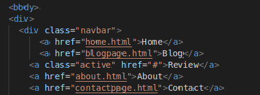

I.T & Business - Review: Site content part 1
Content and layout of each page
In this section of the review, the website layout and float will be analysed and broken down
to ensure that the user can understands why each page was created starting with the font
style text size and all colours.
- Home/landingc page - This used to introduce the blog with a simple image on the front.
- About - This page is for the customer/user to find out more about the writer personality,
likes passions and my technical background.
- Review - This focuses more about the way the site has been built, issues found during the project and
how this can be improved in the future.
- Contact - I have added this page in case someone wanted to get in contact about the business, the blog
or the article.
- Blog - This page has the main blog content and I have divided the pages in section so that the user doesn't
feel overwhelmed with the amount of text and content.
Describe the copyright and other constraints of affecting websites
Copyright
- Plagiarism laws applies to website content as well as IP laws
- Patent ideas and trade marks logos and names laws applies to website
Constraints
- Developer must ensure that personal data are not displayed
- Notifying the user that the website has cookies, which is part of the GDPR
Describe issues that people with disabilities may face when using webpages and how we can overcome them
The below are tool that can help making website more accessible to disabled users
- Adding subtitles and transcripts to vidoe links.
- Utilise colour control
- Include an accessibility guide on the site
I.T & Business - Review: Site content part 2
Preparing appropiate content for your site
- Researching how digital projects are managed depending on the size of the team
- Looking at the best layout for blogs.
Organising and combining information needed for webpages
- Looking at communication platforms
- Researching most popular task management platforms used by digital agencies.
Selecting abd using appropiate editing and formating techniques for clarity and good navigation
- Researching how digital projects are managed depending on the size of the team
- Looking at the best layout for blogs.
Select and use appropiate developement techniques to link information across pages
- I have used the anchor and href to link the pages, code snippet is as per the below.

Changing files formats for documents if necessary to display on your site
Because the site is only built using HTML and CSS, the only way to share it as a web link
via a browser is to include an "index.html" file within you developing files and use gitHub
link to share the site.
Having error free pages that are fit for purpose
The web page has been checked on multiple browsers to ensure there are not errors,
Google chrome, Safari, Firefox and Mobile.
Most issues were found when looking at the site on the mobile screen, the background didn't work as well.
and the Navbar was over lapping with the heading.